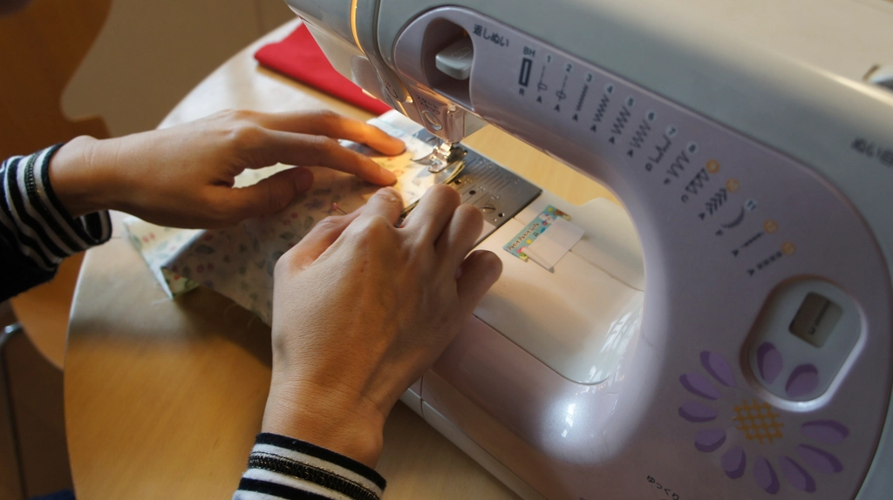
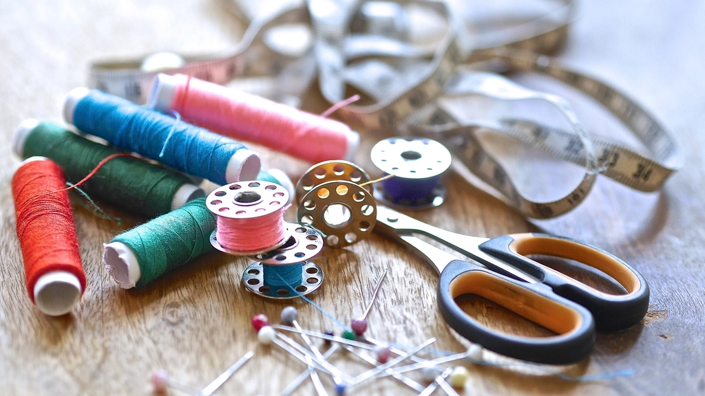
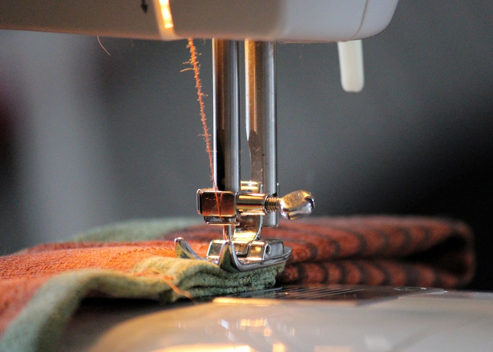
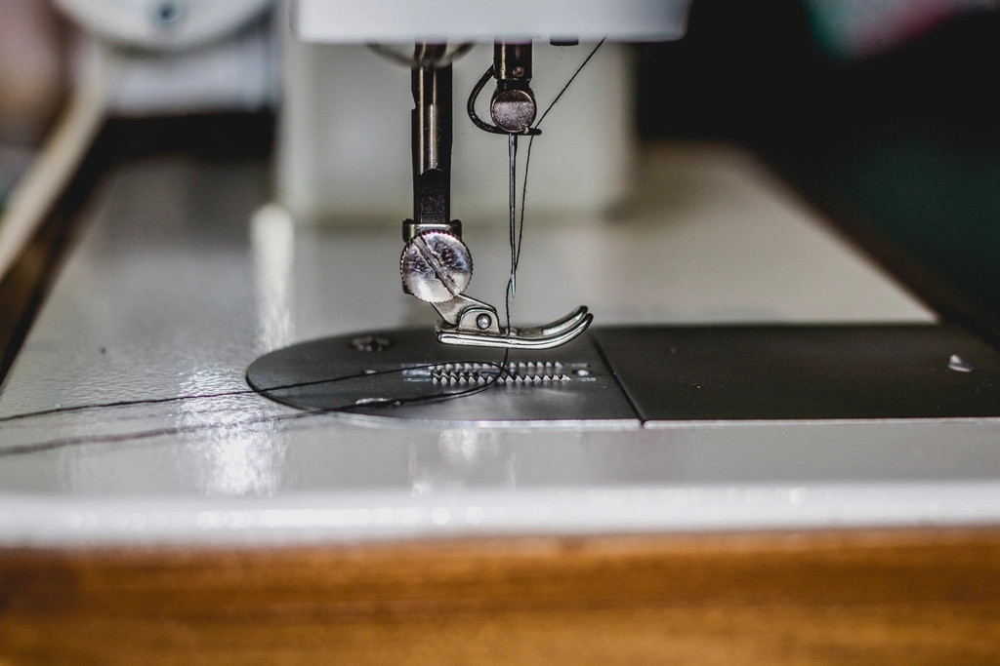

La de pedal
Donde empezó todo.
Arreglos, ajustes y la ropa de todos los días, con décadas de oficio.
Décadas de oficio, hecho a mano, cerca de ti.



En Venezuela, la costura es un oficio que se hereda y se cuida. Esa mano ahora vive en Ciudad de la Costa.
Donde empezó todo.

La que te cose.
Un oficio que no se compra: se hereda.
Uniformes, ropa de los niños, arreglos de siempre y esa prenda de fiesta que necesita un retoque. Todo con la misma dedicación.
La ropa de siempre que se arregla en vez de tirarse.
El del colegio, el del trabajo o el de servicio, siempre listo.
Renueva y agranda la ropa de tu bebé para que le dure más.
Ese vestido que con un retoque vuelve a lucir como la primera vez.
El atelier está en Solymar. Lo más sencillo es que te acerques con la prenda y te atiendo en el momento. Si te queda lejos, escríbeme y lo vemos.
Solymar y alrededores. Si estás un poco más lejos, consúltame de todas formas.
Solymar, El Pinar, Lagomar y alrededores. Retiro y entrega a coordinar.
Cuéntame qué necesitas por WhatsApp.
Con la foto, cotizo al instante.
La dejas y comienzo con el arreglo.
Pagas al retirar: efectivo o transferencia.
La mayoría de los arreglos, en tus manos en un par de días.
Te atiende Zulari Valderrama por WhatsApp: precios claros, respuestas rápidas y buen trato.